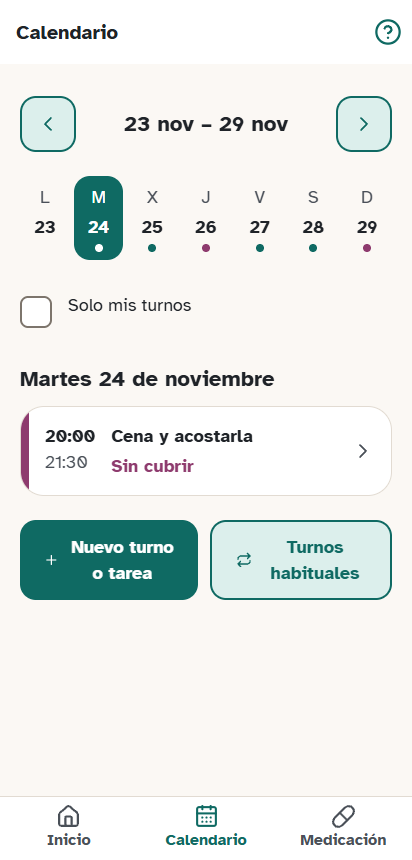

Inicio › Manual › Calendario y turnos
Calendario y turnos
Quién va cada día y qué hay que hacer.

Ver el calendario
Cada día muestra sus visitas, tareas, servicios y citas, con quién va. «Sin cubrir» quiere decir que aún no va nadie.
Las horas son siempre las del círculo, aunque estés en otro sitio.
Apuntarte a un turno
Solo para: coordinación, quien cuida, familia y amistades
Abre un turno sin cubrir y pulsa «Me apunto».
Si al final no puedes, pulsa «Me desapunto» antes de que empiece. Si era obligatorio, la coordinación recibe un aviso.
Mis turnos
En el inicio, «Tus turnos» te lleva a la lista de los tuyos. Antes de cada uno te llega un recordatorio: mira «Recordatorio de tus turnos».
Dar las gracias
Debajo de un turno hecho, una nota del diario, un recado hecho o una nota del relevo de otra persona sale «Dar las gracias». A quien lo hizo le llega un aviso y, junto a esa cosa, sale «Gracias de…» para quien ya podía verla. No hay contadores ni rankings.
Si te equivocas, pulsa «Has dado las gracias · Deshacer».
Los que recibes salen en «Para ti, que cuidas», en «Gracias que has recibido» (últimos 30 días; solo los ves tú). Con premium, la persona cuidada también puede dar las gracias desde su móvil a quien ha venido ese día.
Recordatorio de tus turnos
Antes de cada turno que tengas apuntado (visitas, tareas, acompañar a una cita, llevar y recoger), te llega un aviso al móvil.
En tu Perfil, en «Recordatorio de mis turnos», eliges cuánto antes: 30 minutos, 1 hora o 2 horas, o «No avisarme».
Tu disponibilidad y tus ausencias
Solo para: coordinación, quien cuida
En tu perfil → «Mi disponibilidad», pon qué días y a qué horas sueles poder ayudar, y las fechas en las que no estás (vacaciones). El motivo lo ven los demás solo si marcas la casilla. Vale para todos tus círculos.
La de todo el círculo está en «Personas» → «Disponibilidad de todos».
Al asignar un turno, cada persona sale con «Disponible», «Fuera de su horario» o «Ausente», y en un turno sin cubrir verás quién puede ir. Se puede asignar a alguien no disponible: la app solo lo advierte.
Si apuntas una ausencia y tienes turnos esos días, la coordinación recibe un aviso para reorganizarlos.
✦ Premium: a las 9:00 llega un aviso a quien está disponible para un turno sin cubrir de los próximos 3 días.
Añadir una visita o una tarea
Solo para: coordinación, quien cuida
En el calendario, pulsa «Nuevo turno o tarea». Elige si es una visita o una tarea, el día, la hora y, si quieres, quién va.
Marca «Obligatorio» si alguien tiene que ir sí o sí: si nadie se apunta, la coordinación recibe un aviso.
Turnos que se repiten
Solo para: coordinación
En «Turnos habituales» se crean los que se repiten cada semana (por ejemplo, las mañanas de lunes a viernes). La app los añade al calendario con 4 semanas de antelación.
Si cambias un turno habitual, se cambian los que vienen, pero no los que ya tocaste a mano.
Llegada y salida
En una visita, pulsa «He llegado» al llegar y «Me voy» al salir. Al salir puedes dejar una nota para el diario.
Si la visita tiene tareas, márcalas al hacerlas: si queda alguna sin hacer, la app te lo recuerda.
Relevo entre turnos
Al pulsar «Me voy», escribe en «Para quien venga después» lo que tiene que saber quien llegue: cómo está, qué falta, qué queda pendiente.
Quien tenga una visita en las 24 horas siguientes recibe un aviso y ve la nota arriba de su turno y en «Hoy». También la ven la coordinación y quienes cuidan.
Quien cuida puede dejar una nota sin visita desde «Hoy», con «Dejar una nota de relevo». Las notas se ven 24 horas.
Pedir que me cubran
Si no puedes ir a un turno tuyo, ábrelo y pulsa «Pedir que me cubran», con un mensaje si quieres. Sigue siendo tuyo hasta que alguien lo coja, así que nunca queda sin nadie.
Avisamos a la coordinación y a quienes cuidan y están disponibles. El turno sale como «Busca quien le cubra» y el primero que pulsa «Me apunto» se lo queda. Si ya no hace falta, pulsa «Ya no hace falta».
Tus turnos en el calendario del móvil
✦ Premium
Desde tu perfil o desde «Mis turnos» puedes añadir tus turnos a Google Calendar o al calendario del móvil. Se actualizan solos.
¿Aún no usas Tutelia?
Es gratis para organizar el día a día entre varias personas. Así se empieza.